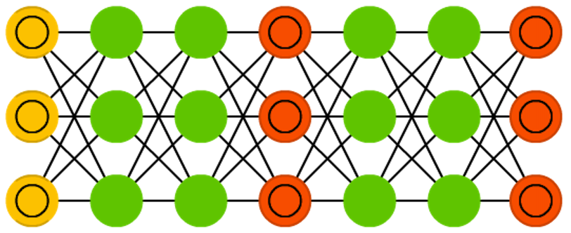
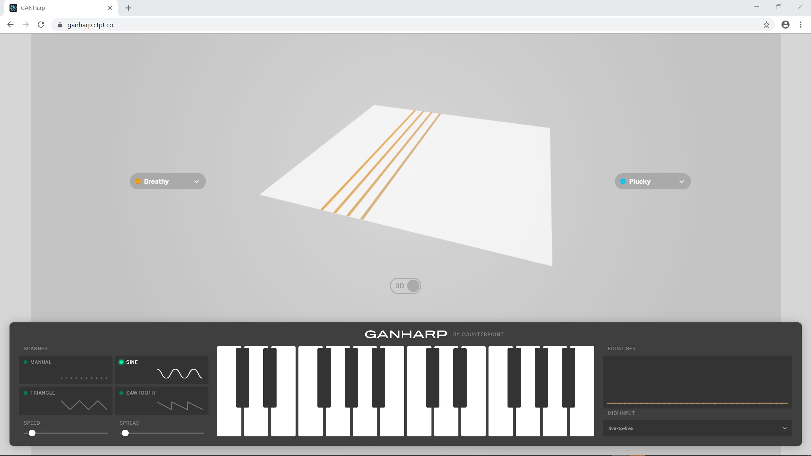

Music Generation with Magenta.js
Using JavaScript and Machine Learning in Arts
Alexandre DuBreuil (@dubreuia)
Alexandre DuBreuil
Software engineer, sound designer, book author, conference speaker and open source maintainer.
Introduction to Magenta
Make Music and Art Using Machine Learning
"An open source research project exploring the role of machine learning as a tool in the creative process." - Google Magenta (https://magenta.tensorflow.org)
Magenta in Python


Magenta.js in JavaScript

Demo 01 - Generating audio 🔊
Generating audio using GANSynth
 The Generative Adversarial Network has been trained on short instrument notes (NSynth dataset)
Generating audio using GANSynth
<script src="(...)/npm/tone@13.8.25/build/Tone.min.js"></script>
<script src="(...)/npm/@tensorflow/tfjs@1.5.2/dist/tf.min.js"></script>
<script src="(...)/npm/@magenta/music@^1.12.1/es6/core.js"></script>
<script src="(...)/npm/@magenta/music@^1.12.1/es6/gansynth.js"></script>
const checkpointURL = "https://storage.googleapis.com/magentadata" +
"/js/checkpoints/gansynth/acoustic_only";
const ganSynth = new gansynth.GANSynth(checkpointURL);
await ganSynth.initialize();
const specgrams = await ganSynth.randomSample(60);
const audio = await ganSynth.specgramsToAudio(specgrams);
const audioBuffer = Tone.context.createBuffer(1, length, sampleRate);
audioBuffer.copyToChannel(audio, 0, 0);
Demo 02 - Generating melodies 🎶
Generating melodies using MusicVAE
 The Variational Autoencoder has been trained on 4 bars melodies from MIDI files of various sources
The Variational Autoencoder has been trained on 4 bars melodies from MIDI files of various sources
Generating melodies using MusicVAE
<!-- ... -->
<script src="(...)/npm/@magenta/music@^1.12.1/es6/music_vae.js"></script>
<!-- ... -->
const samples = await window.musicVae.sample(1);
const sample = samples[0];
const player = new Player();
Tone.Transport.loop = true;
Tone.Transport.loopStart = 0;
Tone.Transport.loopEnd = 8;
player.start(sample, 120);
const frequency = new Tone.Frequency(note.pitch, "midi");
const duration = note.endTime - note.startTime;
synth.triggerAttackRelease(frequency, duration, time, 1);
More Magenta
The power of the browser and Web Audio
Does it sound good? Let's say it's interesting... But with minimal code, we can get started on music generation, and distribute music generation applications easily 🤩
GANHarp

Music Generation with Magenta
Explore the role of deep learning in music generation and assisted music composition
Thank you!
Slides and Code: alexandredubreuil.com